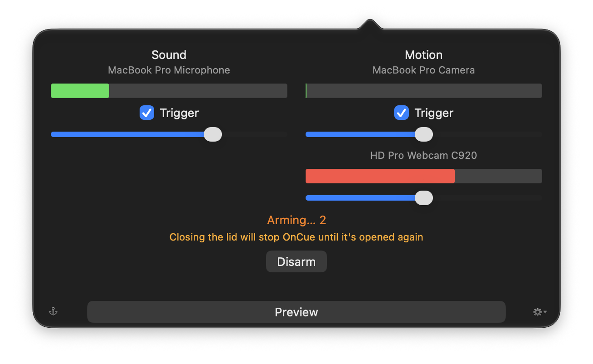
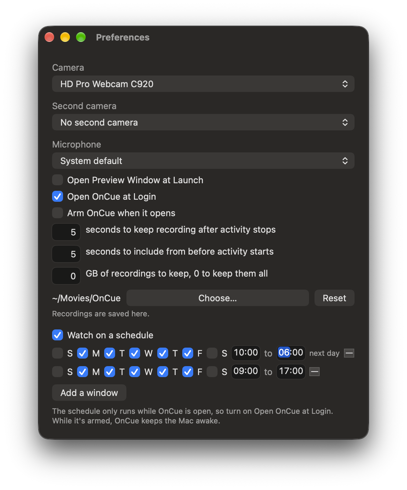

Help
OnCue is free. Get it from the front page, and see what's changed in each version in the changelog.
The popover
Click OnCue's icon in the menu bar to open it. Sound is on the left and motion on the right, each with a meter showing what OnCue is picking up right now, a checkbox to turn that trigger on or off, and a slider for how much it takes to set it off. Under the meters is the current state, and the button that arms and disarms.
Each meter is coloured against its own slider: green while what it's picking up wouldn't start a recording, yellow as it gets close, and red once it would. Move the slider and the colours move with it, so you can see what will set OnCue off before you arm it.
After an update, a line under the state says so and links to the changelog at that version's entry. It stays until you click it.

Arming
Click Arm and OnCue counts down, then watches. While it's armed, any motion or sound past its slider starts a recording, and the recording keeps going while that continues. Arm is unavailable when nothing could set it off: both triggers off, their devices missing, or motion detection not working.
The menu bar icon
The icon says what OnCue is doing: plain while unarmed, orange while it counts down, red with a blue center while armed, and all red while it's recording. Yellow means a recording couldn't be saved; the popover says why.
Settings
The gear in the popover opens Settings. Pick the camera, a second camera, and the microphone; choose how long recording continues after everything goes quiet, and how many seconds from before the trigger each recording includes. You can also pick where recordings are saved, have OnCue open when you log in, arm itself whenever it opens, and open the preview window at launch.
Every device is optional. Choose no camera at all and OnCue listens instead, recording sound with nothing to look at; choose no microphone and it watches without listening, which matters if a room is one thing and the conversations in it are another.
Choosing none also switches off the trigger that depended on it, since a trigger left on for a device you just removed can never fire. Unplugging something is different: OnCue leaves that trigger alone, so it picks up again when the device comes back.

Two cameras
Choose a second camera in Settings and OnCue watches both at once, each with its own meter and slider in the popover, and each recording its own file. Anything that sets one off records both. Unplug one and OnCue keeps watching with the other.
The preview window
Preview shows what OnCue sees, with movement picked out in red, so you can aim the camera and set the sliders. Two cameras appear side by side.
Your recordings
Recordings go to the OnCue folder inside your Movies folder, named for when they start and the camera and microphone they came from. Choose Show Recordings from the menu to open that folder at the newest one. In Settings you can pick a different folder, including one on another disk or one that syncs to the cloud; if it isn't there when OnCue needs it, recordings go back to your Movies folder until it is.
To see the whole chain work without waiting for something to happen, choose Record a Test from the menu. OnCue arms if it wasn't, records on every camera for the usual length, shows you the file, and goes back to how it was. It's an ordinary recording, named and kept like any other; if anything about the setup is wrong, this is where it says so.
Beside every recording there's a still, a JPEG under the same name, taken at the moment the recording was triggered. Finder's gallery view or a pass with Quick Look shows what each recording caught without opening any of them, and the still is the file to send when someone asks what happened. The size limit counts stills too, and they go when their recording goes.
When you disarm, the popover says what happened while OnCue was armed: how long, how many recordings, and when the first and last were. Click that line, or choose Show What Happened from the menu, and Finder opens with exactly those files selected, oldest first, stills included, so the gallery view walks you through it. The line stays until the next stretch of being armed ends; a stretch shorter than ten minutes with nothing recorded doesn't replace it.
Make a Time-lapse, in the same menu, turns that stretch into one short movie. A summary, if you will. The original videos still exist, so you can always go back to them. With two cameras the movie shows both recordings side by side on one timeline. It lands in the recordings folder as "What happened", named for the stretch, and opens in Finder when it's done. The size limit never deletes it, and making it again for the same stretch replaces the last one.
If a recording loses frames, because the Mac was busy or the camera couldn't keep up, its name says how many seconds are missing. Most recordings never get one, so a name that carries it is telling you that file doesn't show everything that happened.
How much disk OnCue uses
Recording costs about a megabyte a second per camera, so a busy night can run to tens of GB. OnCue stops before the disk is completely full and tells you it stopped, which is better than recording into a full disk and failing. It keeps watching, so it starts again once there's room.
If you'd rather it made room instead, Settings takes a number of GB of recordings to keep. Leave it at 0, the default, and OnCue never deletes anything. Set it and OnCue deletes its own oldest recordings to stay under that number, and says in the popover when it has.
It only ever deletes files it wrote itself, recognised by the name it gave them. Anything else in the folder is left alone, and so is a recording you renamed, which is how you keep one for good. Worth knowing if your recordings go to a folder that syncs: a deletion there reaches every device that folder is on.
Both of those apply while a recording is running, not only between recordings. A recording keeps going for as long as something keeps moving, so one can run for hours. If it grows past the limit on its own, OnCue carries on in a new file, picking up exactly where the last one left off, and the one that closed can be cleared like any other. If the disk is running out, OnCue ends the recording rather than writing until it fails, so what it already has is kept.
When a recording can't be saved
If OnCue can't write a recording, the menu bar icon turns yellow and the popover says why: no room left where recordings go, the folder not there, or OnCue not allowed to write to it. It says how many recordings in a row have gone the same way, so one piece of bad luck reads differently from a setup that needs fixing.
It stays until you disarm, so it's still there when you come back rather than being cleared by whatever happens next. OnCue keeps watching either way: a camera that stops because it hit trouble is worse than one that keeps trying and says so.
How often it's recording
The popover says how many recordings the last day produced and how long they typically run, next to the shortest one your settings can make. That shortest one is your pre-roll plus the time OnCue keeps recording after activity stops, so it's a floor you choose.
It's there because a folder fills up from how often OnCue records rather than how big each recording is, and there was no way to tell without opening the folder and counting. If most recordings are close to the floor, the trigger is firing on things that end almost immediately, and the slider that decides that is on the same panel. OnCue doesn't say whether that's too many: it can't read the room and tell the difference between a hallway that's busy all day and a curtain moving.
When motion isn't being watched
It's possible for motion detection to stop while nothing looks wrong. The camera stays on, the preview holds its last frame, and the meter holds the last level it saw, so the only thing missing is that nothing records. When that happens the popover says so and that camera's meter greys out, which is what tells the two apart: a meter holding steady because the room is still, and a meter holding steady because nothing is looking at it.
While it's stopped, Arm is unavailable if motion is the only thing set to trigger, since arming would promise something OnCue can't do. Sound is untouched: if it's set to trigger, it keeps watching and recording the whole time, and an OnCue that's already armed stays armed rather than quietly switching itself off.
OnCue keeps trying. If measuring comes back, the warning goes and the popover says how long it went unwatched, the same way it does after your Mac has slept.
When the camera is on
OnCue opens the camera only while it's watching: armed, or while the popover or the preview window is open. The rest of the time the camera is off and its light in the menu bar is out, so a lit camera means OnCue is recording or ready to.
On macOS 26.2 and later there's a setting called Edge Light that brightens the screen to light whoever is in front of the camera. It turns itself on for any app using the camera, including OnCue, which is unhelpful when the point is to watch a room quietly. OnCue says so under the motion meter when it's happening, but it can't switch it off; that's a macOS setting.
Arming itself
OnCue can be set to arm itself every time it opens, so a Mac that restarts goes back to watching without anyone touching it. It counts down for fifteen seconds first and tells you it's arming, so there's time to stop it. Worth knowing before you turn it on: a Mac set this way records whoever walks past it after every restart, whether or not they know OnCue is there. It only happens if something opens OnCue after the restart, you can enable "Open OnCue at Login" in settings.
Watching only part of the picture
In the preview window, drag a rectangle around the part of the picture that matters, the cat bed or the door. Motion outside those selelected zones aren't counted. Draw as many as you need; click one and press Delete to remove it, drag it to move it, or clear them all with the button. While zones exist the rest of the picture is dimmed, and motion there still shows through so you can see what you're choosing to ignore. Each camera has its own zones. Recordings are always the whole picture; zones decide when to record, not what to keep. Drawing a zone takes a mouse or trackpad; it's the one part of OnCue a screen reader or keyboard alone can't reach, and without zones the whole picture is watched.
On a schedule
OnCue can arm itself between times you set, on the days you choose, and disarm when the window ends. Add as many windows as you need in Preferences: weekdays nine to five and Saturday mornings are two rows. A window can cross midnight; it belongs to the day it starts on. If you disarm it yourself during a window it stays disarmed until the next window starts, and anything you armed by hand is left alone. It counts down and tells you it's arming, the same as arming at login. The schedule only runs while OnCue is open, so turn on Open OnCue at Login with it. While the schedule is on, OnCue keeps the Mac from sleeping the whole time, days without a window included: a Mac asleep between windows can't notice the next one start, and nothing OnCue can do would wake it. Between windows the popover says when the next one starts.
Arming when you leave
OnCue has Shortcuts actions: Arm OnCue, Disarm OnCue, Is OnCue Armed, and Record a Test. Siri takes them too ("Arm OnCue"). And it has a Focus Filter: in System Settings, under Focus, add OnCue's filter to a Focus and turn on its one switch, and OnCue arms itself whenever that Focus is on and disarms when it ends. Since a Focus follows you across your devices, an Away Focus that your iPhone turns on when you leave home arms the Mac before you're down the street, with nothing to remember and nothing sent anywhere: the Focus is Apple's, and OnCue still has no network permission. A Focus only disarms what it armed; if you armed OnCue yourself, a Focus ending leaves it alone. The switch in the filter's settings starts off, so turn it on. And a Focus can only arm OnCue while OnCue is open, so turn on Open OnCue at Login with it.
Sleep
While it's armed, OnCue keeps your Mac from going to sleep on its own. Closing a laptop's lid still sleeps it unless the Mac is plugged in with an external display, so OnCue warns you when that's the case, and tells you afterwards if your Mac slept while armed.
Permission
macOS asks for camera and microphone access the first time OnCue needs them. If you refuse, or change your mind later, you can set it in System Settings under Privacy & Security. Without a microphone OnCue records video only, and without a camera it records sound only.
In German
On a Mac set to German, OnCue is in German: the menu, the popover, Preferences, the preview window, its notifications and the permission prompts. It follows the system language; there's nothing to set. Recordings are still named the same way everywhere, so they sort the same in Finder whatever the language.